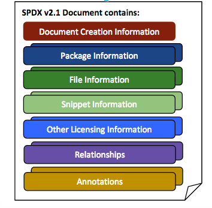

1 Rationale
1.1 Charter
To create a set of data exchange standards that enable companies and organizations to share license and component information (metadata) for software packages and related content with the aim of facilitating license and other policy compliance.
1.2 Definition
The Software Package Data Exchange (SPDX®) specification is a standard format for communicating the components, licenses, and copyrights associated with software packages. An SPDX file is associated with a particular software package or set of packages and contains information about it in the SPDX format.
1.3 Why is a common format for data exchange needed?
Companies and organizations (collectively “Organizations”) are widely using and reusing open source and other software packages. Compliance with the associated licenses requires a set of analysis activities and due diligence that each Organization performs independently, which may include a manual and/or automated scan of software and identification of associated licenses followed by manual verification. Software development teams across the globe use the same open source packages, but little infrastructure exists to facilitate collaboration on the analysis or share the results of these analysis activities. As a result, many groups are performing the same work leading to duplicated efforts and redundant information. The SPDX working group seeks to create a data exchange format so that information about software packages and related content may be collected and shared in a common format with the goal of saving time and improving data accuracy.
1.4 What does this specification cover?
1.4.1 SPDX Document Creation Information: Meta data to associate analysis results with a specific version of the SPDX file and license for use, and provide information on how, when, and by whom the SPDX file was created.
1.4.2 Package Information: Facts that are common properties of the entire package.
1.4.3 File Information: Facts that are specific to each file included in the package.
1.4.4 Snippet Information: Facts that are specific to only a part of a file.
1.4.5 Other Licensing Information Detected: A way to capture information about and refer to licenses that are not on the SPDX License List.
1.4.6 Relationships Between SPDX Elements: Information on how Documents, Packages & Files relate to each other.
1.4.7 Annotations: Information about when and by whom the SPDX file was reviewed

1.5 What is not covered in the specification?
1.5.1 Information that cannot be derived from an inspection (whether manual or using automated tools) of the package to be analyzed.
1.5.2 How the data stored in an SPDX file is used by the recipient.
1.5.3 Any identification of any patent(s) which may or may not relate to the package.
1.5.4 Legal interpretation of the licenses or any compliance actions that have been or may need to be taken.
1.5.5 Examples may contain ... which indicate detailed text specific to the SPDX Document
1.6 What does "Package" mean in the context of SPDX?
In SPDX, a 'Package' refers to any unit of content that can be associated with a distribution of software. Typically, a Package is composed of one or more files. An SPDX document may, but is not required to, provide details about the individual files comprising a Package (see the "File Information" details in section 4).
Any of the following non-limiting examples may be (but are not required to be) represented in SPDX as a Package: * a tarball, zip file or other archive * a directory or subdirectory * a separately-distributed piece of software which another Package or File uses or depends upon (e.g., a Python package, a Golang module, ...) * a container image, and/or each image layer within a container image * a collection of one or more sub-packages * a Git repository snapshot from a particular point in time
Note that some of these could be represented in SPDX as a File as well.
In an SPDX document, Relationship elements can be used to indicate relationships between Packages, such as dependency relationships.
1.7 Format Requirements
1.7.1 Must be in a human readable form.
1.7.2 Must be in a syntax that a software tool can read and write.
1.7.3 Must be suitable to be checked for syntactic correctness independent of how it was generated (human or tool).
1.7.4 The SPDX file character set must support UTF-8 encoding.
1.7.5 Must permit automated specification syntax validation.
1.7.6 Resource Description Framework (RDF) can be used to represent this information, as can an annotated tag value flat text file.
1.7.7 Interoperability with an annotate tag:value format and the RDF format will be preserved.
1.7.8 Tags and RDF properties are case sensitive.
1.7.9 Should be easy to recognize in a file system without opening the file. A suggested naming convention is to use *.spdx (for tag:value format) and *-spdx.rdf for RDF format.
1.7.10 The convention in this specification is for the RDF examples to use rdf:about="..." to represent that a proper Universal Resource Indicator (URI) should be present.
1.8 Conformance
1.8.1 A file can be designated an SPDX document, if it is compliant with the requirements of the SPDX Trademark License (See the SPDX Trademark Page).
1.8.2 The official copyright notice to be used with any verbatim reproduction and/or distribution of this SPDX Specification 2.2-DRAFT is:
"Official SPDX® Specification 2.2 Copyright © 2010-2019 Linux Foundation and its Contributors. Licensed under the Creative Commons Attribution License 3.0 Unported. All other rights are expressly reserved."
1.8.3 The official copyright notice to be used with any non-verbatim reproduction and/or distribution of this SPDX Specification, including without limitation any partial use or combining this SPDX Specification with another work, is:
"This is not an official SPDX Specification. Portions herein have been reproduced from SPDX® Specification 2.2 found at spdx.org. These portions are Copyright © 2010-2019 Linux Foundation and its Contributors, and are licensed under the Creative Commons Attribution License 3.0 Unported by the Linux Foundation and its Contributors. All other rights are expressly reserved by Linux Foundation and its Contributors."
1.9 Differences from SPDX Specification 2.0
1.9.1 Snippets have been added to allow a portion of a file to be identified as having different properties from the file it resides in. The use of snippets is completely optional and it is not manditory for snippets to be identified. See section 5 Snippet Information for further details on the fields available to describe snippets.
1.9.2 External Packages can now be refered to in SPDX documents. When there is no SPDX file information available to document the content of these external packages, then the filesAnalyzed attribute on a package should be set to false. See section 3.8 Files Analyzed for more information.
1.9.3 Packages are now able to associate with an “External Reference” which allows a Package to reference an external source of additional information, metadata, enumerations, asset identifiers, or downloadable content believed to be relevant to the Package. See: section 3.21 External Reference, 3.22 External Reference Comment and Appendix VI: External Repository Identifiers for more information.
1.9.4 The “Artifact of Project” fields at the file level are now deprecated, as they can be replaced by a relationship to the more descriptive External Packages.
1.9.5 A new appendix “Using SPDX short identifiers in Source Files” has been added to document the best practices to refer to the licenses in the SPDX license list that have emerged from the development community. See Appendix V: Using SPDX short identifiers in Source Files for more information.
1.9.6 Miscellaneous bug fixes as reported on the mailing list and reported as issues on the spdx-spec GitHub repository.